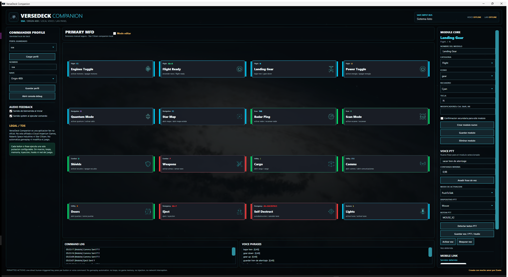

Ejecuta el instalador
Abre VerseDeckCompanionSetup-x.x.x.exe. La instalacion es por usuario y no necesita administrador.
VerseDeck Companion es una botonera fan para Star Citizen centrada en una idea simple: ejecutar acciones manuales, configurables y locales desde escritorio, voz o movil en LAN.

Instala siempre la version mas reciente del instalador. Las actualizaciones se instalan encima de la version anterior y conservan tus perfiles, comandos y configuracion.
Abre VerseDeckCompanionSetup-x.x.x.exe. La instalacion es por usuario y no necesita administrador.
Inicia VerseDeck Companion desde el menu de inicio o el acceso directo si decidiste crearlo.
Selecciona una nave, revisa las teclas del MFD y guarda tu perfil.
%AppData%\VerseDeck Companion. No se guardan dentro de la carpeta de instalacion.
La interfaz esta dividida en tres columnas principales y una zona inferior de diagnostico.
Gestiona perfiles, naves, sonidos y consola debug.
Botonera principal. Ejecuta acciones o selecciona modulos en modo editar.
Editor del modulo, frases de voz, PTT y servidor movil.
Historial de acciones enviadas desde Windows, voz o movil.
Un perfil es una configuracion completa para una nave o estilo de juego. Cada perfil tiene sus propios modulos, teclas y frases de voz.
| Control | Uso |
|---|---|
| Perfil guardado | Selecciona un perfil existente. |
| Cargar perfil | Cambia al perfil seleccionado y recarga el MFD. |
| Nombre | Nombre del perfil. Si usas uno nuevo, se crea un perfil nuevo. |
| Nave | Selector editable de nave. Puedes escribir una nave manualmente. |
| Guardar perfil | Guarda el perfil y autoguarda el modulo que tengas editado. |
| Abrir consola debug | Abre un log en vivo para comprobar voz, movil y errores. |
El MFD contiene los botones de accion. Si Modo editar esta apagado, un click ejecuta la tecla. Si esta encendido, el click solo selecciona el modulo para editarlo.
| Modulo | Funcion habitual | Ejemplo de frase |
|---|---|---|
| Engines Toggle | Encender o apagar motores | encender motores |
| Landing Gear | Sacar o guardar tren | bajar tren |
| Lights | Activar o apagar luces | activar luces |
| Radar Ping | Enviar ping de radar | activar radar |
| Custom | Accion creada por el usuario | aparcar |
El editor controla el modulo seleccionado. Tambien permite crear y eliminar acciones personalizadas.
La voz funciona con el reconocimiento local de Windows. VerseDeck prioriza es-ES y
tambien puede usar reconocedores en ingles si estan instalados.
0.40 a 0.60.El panel movil convierte cualquier telefono de la misma LAN en una botonera remota. La app muestra una URL y un QR para abrir el panel.
Pulsa Activar servidor en Enlace movil.
Abre el enlace desde el movil conectado a la misma red.
El movil envia la misma entrada que el boton del MFD.
Puedes activar sonido de bienvenida al iniciar y sonido system al ejecutar comando. Ambos son opcionales y nunca bloquean el envio de entrada.
Accion humana
-> Click en MFD / frase de voz / toque movil
-> Perfil activo
-> Tecla configurada del modulo
-> Windows SendInput
-> Star Citizen recibe una pulsacion normalNo lee memoria del juego.
No intercepta red de Star Citizen.
No usa hooks del juego.
No hace loops ni macros.
No automatiza decisiones de gameplay.
Cada accion requiere una pulsacion, voz o toque humano.
Aqui ira tu tutorial oficial de VerseDeck Companion. Por ahora queda una URL temporal de YouTube para reservar el espacio y poder cambiarla facilmente cuando subas tu video.
Ver tutorial en YouTube https://www.youtube.com/watch?v=dQw4w9WgXcQRevisa %AppData%\VerseDeck Companion\crash.log y debug.log.
Comprueba que el telefono este en la misma LAN y revisa el estado mostrado arriba en el panel movil.
Usa frases cortas, baja temporalmente la confianza minima y confirma que Windows tenga reconocimiento es-ES.
Usa letras, numeros, F1-F12, flechas o teclas comunes soportadas. Evita simbolos no mapeados.